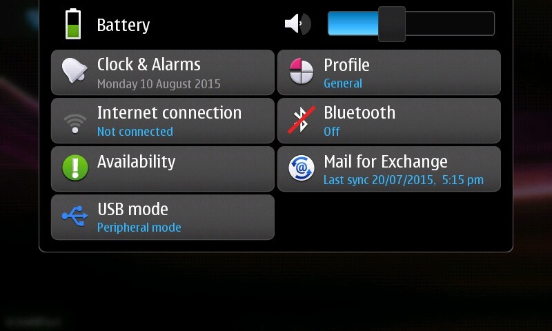
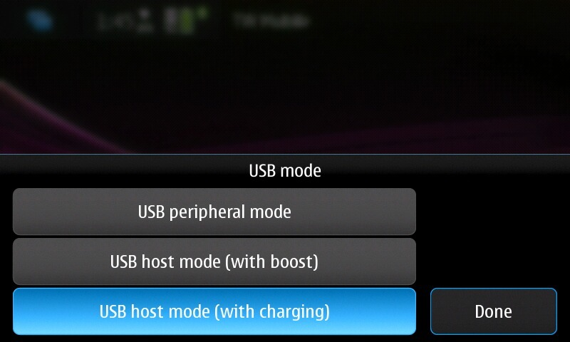
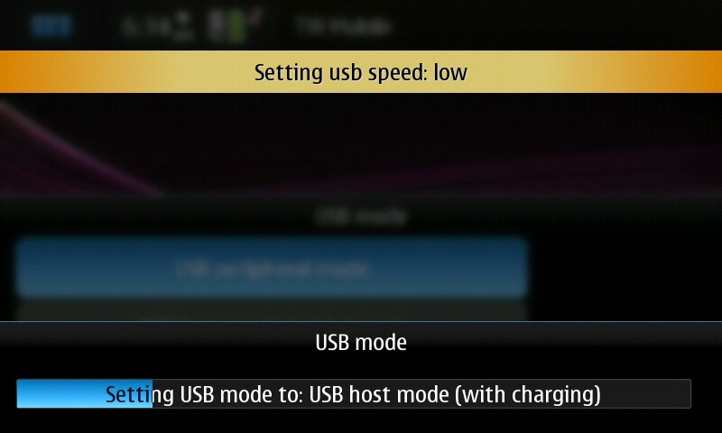

Steward
分享是一種喜悅、更是一種幸福
手機 - Nokia N900 - Maemo - 切換USB Host模式
雖然原廠的Maemo系統並不支援USB Host模式，不過，多虧在Pali和Maemo社群的努力下，終於讓N900可以支援USB Hos模式(僅Kernel Power有支援)，這項改進，再度把N900推向高峰，有了USB Host模式加持，N900更像是一台PC主機，可以連接USB轉RJ-45網卡等裝置，看似很強大，其實還是有熱拔插的問題，不過有總比沒有好，目前N900上有兩套軟體可以用來切換USB Host模式，分別是USB Mode和h-e-n，只有USB Mode有提供USB Host充電模式
安裝完USB Mode後，可以在選單下找到它

分別有如下三種模式：

最難設定的模式就是USB host mode (with charging)，問題當然在於程式判斷邏輯，不過使用者如果懶得修改，可以遵照如下操作步驟：
1. 確定目前為USB peripheral mode
2. 不插入任何USB裝置到N900
3. 點選USB host mode (with charging)
4. 出現如下畫面時，即可插入USB裝置(具供電功能)
